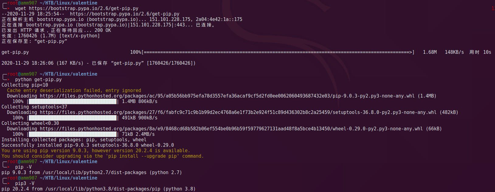

KALI Deploy
自然是选择 KALI 作为工具系统，初始化的配置较为繁琐，这里例举一下常用的配置，最后整理个（尽量）一键脚本。
这里讲下 KALI 安装时基础配置，持续更新
KALI 刚装好上不了网，手动添加网卡
vi /etc/network/interfaces
# 因为用 NAT 模式，需要设置 dhcp 让动态设置 ip
auto eth0
iface eth0 inet dhcp
# 重启网络
/etc/init.d/networking restart && ip aapt 源相关
国内源
# deb 是针对二进制软件包的，可以使用 apt 进行安装。
# deb-src 则针对源代码包（由下载apt-get source $package），然后进行编译。
# 如果自己编译某些软件包或检查源代码中是否有错误时，才需要源软件包。一般用户不需要包含此类存储库。
# 中科大 和 阿里云 kali 源
apt-key adv --recv ED444FF07D8D0BF6
echo "deb http://mirrors.ustc.edu.cn/kali kali-rolling main non-free contrib" >> /etc/apt/sources.list
echo "deb http://mirrors.aliyun.com/kali kali-rolling main non-free contrib" >> /etc/apt/sources.list包管理工具
apt-get install aptitude 安全工具
MSF
自带 MSF5，我们要升级成 MSF6。
用 msfupdate 更新，被告知不再支持，改用 apt update; apt install metasploit-framework。
然而执行一半突然停了，啥也没报，然后 msf 打不开，也没更上，我佛了。
遇事不决就重装，问题解决。
apt remove metasploit-framework
curl https://raw.githubusercontent.com:443/rapid7/metasploit-omnibus/master/config/templates/metasploit-framework-wrappers/msfupdate.erb > msfinstall && chmod 755 msfinstall && ./msfinstall多种工具
apt-get install -y gobuster, steghide, strace, ltrace脚本配置
预装了 python2/3、pip3 但没有 pip2。
wget https://bootstrap.pypa.io/2.6/get-pip.py
python2 get-pip.py
pip2 -V
pip2 install --upgrade pip
# 替换原 pip(3)
mv /usr/local/bin/pip /usr/local/bin/pip.bk
ln -s /usr/local/bin/pip2 /usr/local/bin/pip
组件安装
# pip2
pip install paramiko requests
# pip3
pip install paramiko难搞的 pwntools，目前安装报错
pip install -U setuptools pip install cryptography==2.5 # 2.5 适配当时安装的版本，按理说越高越好 pip install pwntools # 报错 pip install pwntools -i https://www.piwheels.org/simple/ # 报错
信息收集相关
apt install seclists curl enum4linux gobuster nbtscan nikto nmapomesixtyone oscanner smbclient smbmap smtp-user-enum snmp sslscan sipvicious tnscmd10g whatweb wkhtmltopdf
需要解压的文件
gzip -d /usr/share/wordlist/rockyou.txt.gz
辅助工具
Docker
curl -sSL https://get.daocloud.io/docker | sh # 国内 daocloud
curl -fsSL https://get.docker.com | bash -s docker --mirror Aliyun # 官方
curl -sSL http://acs-public-mirror.oss-cn-hangzhou.aliyuncs.com/docker-engine/internet | sh - # 阿里云杂七杂八的配置
终端外观
直接在终端选项是改不了的，因为终端正在打开，改完了还会被覆盖，应该关闭终端，修改配置文件。
- 图标：goterminal
- 字体：关闭终端后，修改配置
.config/qterminal.org/qterminal.ini
fontFamily=Dejavu Sans Mono
fontSize=11KALI init script
#!/bin/bash
echo " "
echo " ___ ___ ___ "
echo " | | | /| / "
echo " - |- - |- - -+-| | + | + "
echo " | | | | | | | | | |/ | / "
echo " -- --- --- "
echo " "
echo " ==== ==== "
echo " = Kali init = "
echo " = Author: amm907 = "
echo " = https://amm907.com = "
echo " ==== ==== "
echo " "
echo ""
echo "[*] 自用自动配置脚本，用于 kali 基础配置。"
read -p "[*] 请按任意键继续...."
echo "[+] 添加 kali 源"
apt-key adv --recv ED444FF07D8D0BF6
echo "deb http://mirrors.ustc.edu.cn/kali kali-rolling main non-free contrib" >> /etc/apt/sources.list
echo "deb http://mirrors.aliyun.com/debian stable main contrib non-free" >> /etc/apt/sources.list
echo "[ok] 添加 kali 源成功！"
echo ""
echo "[+] 添加一个普通用户"
read -p "请输入用户名: " username
useradd -m -G sudo,video,audio,cdrom -s /bin/bash $username
echo "请设置用户密码："
passwd $username
echo "[ok] 添加普通用户成功！"
echo ""
# 安装内核头文件
echo "[+] 安装内核头文件... "
apt-get -y install linux-headers-$(uname -r)
echo ""
echo "[ok] 内核头文件安装成功！"
echo ""
# 解决kali启动时静音问题
echo "[+] 安装 alsa-utils 解决kali启动时静音问题"
apt-get -y install alsa-utils
echo "[ok] 安装 alsa-utils 成功！"
echo ""
echo "[+] 添加PPPoE拨号连接功能"
apt-get install pppoe pppoeconf
echo "[ok] 安装PPPoE成功!"
echo " >> 你可以使用 nm-connection-editor 命令管理pppoe连接"
echo ""
echo "[+] 添加VPN支持: PPTP IPsec/IKEv2 vpnc network-manager-ssh"
apt-get -y install network-manager-pptp network-manager-pptp-gnome network-manager-strongswan network-manager-vpnc network-manager-vpnc-gnome network-manager-ssh
echo "[ok] 成功添加vpn支持!"
echo ""
# Base Tool
echo "[+] 安装一些必备系统工具：谷歌拼音输入法、垃圾清理工具、截图工具、快速启动工具、软件包管理工具等"
apt-get -y install fcitx fcitx-googlepinyin flameshot bleachbit gdebi synaptic synapse catfish scrot vokoscreen chromium
echo "[ok] 成功安装系统必备软件!"
echo ""
# Server Tools
echo "[+] 安装服务器连接管理工具：remmina、filezilla"
apt-get -y install remmina filezilla
echo "[ok] 安装服务器连接管理工具成功!"
echo ""
# 美化
echo "[+] 设置窗口按钮到左侧"
gsettings set org.gnome.desktop.wm.preferences button-layout 'close,maximize,minimize:'
echo "[ok] 设置窗口按钮到左侧成功！"
echo ""
echo "[+] 安装中文字体"
apt-get -y install fonts-wqy-microhei fonts-wqy-zenhei
echo "[ok] 安装中文字体成功！"
echo ""
echo "[+] 安装基本美化工具"
apt-get -y install zsh screenfetch neofetch figlet peek
#apt-get -y install cairo-dock
echo "[ok] 安装成功！"
echo ""
echo "[+] 删除无用主题"
cd /usr/share/themes/ && rm -rf Albatross Blackbird Bluebird HighContrast Greybird*
echo "[ok] 删除成功！"
# Security Tools
echo "[+] 安装图形化十六进制编辑器bless"
apt-get -y install bless
echo "[ok] 安装成功！"
echo ""
echo "[+] 安装firewalld防火墙及iptables图形化管理工具gufw "
apt-get -y install gufw firewalld firewall-applet
#systemctl enable firewalld.service
echo "[ok] 安装成功！"
echo ""
# Install sublime text 3
echo "[+] 安装sublime text 3，速度可能会比较慢"
wget -qO - https://download.sublimetext.com/sublimehq-pub.gpg | sudo apt-key add -
sudo apt-get install apt-transport-https
echo "deb https://download.sublimetext.com/ apt/stable/" | sudo tee /etc/apt/sources.list.d/sublime-text.list
apt-get update
apt-get install sublime-text
echo "[+] 解决sublime-text 中文输入问题"
git clone https://github.com/lyfeyaj/sublime-text-imfix.git
cd sublime-text-imfix
cp ./lib/libsublime-imfix.so /opt/sublime_text/ && cp ./src/subl /usr/bin/
echo "[ok] 修复成功。输入subl命令启动sublime text即可输入中文！"
echo ""
# Install typora
echo "[+] 安装 typora，速度可能会比较慢"
sudo apt-key adv --keyserver keyserver.ubuntu.com --recv-keys BA300B7755AFCFAE
echo "deb http://typora.io linux/" | sudo tee /etc/apt/sources.list.d/typora.list
sudo apt-get update -y
sudo apt-get install typora
echo ""
echo "[+] 安装 node npm"
wget https://npm.taobao.org/mirrors/node/v8.9.3/node-v8.9.3.tar.gz
tar zxvf node-v8.9.3.tar.gz && mv node-v8.9.3-linux-x64 /opt
ln -s /opt/node-v8.9.3-linux-x64/bin/node /usr/local/bin/node
ln -s /opt/node-v8.9.3-linux-x64/bin/npm /usr/local/bin/npm
rm ~/node-v8.9.3.tar.gz
echo ""
echo "[+] 清除垃圾 ......"
apt-get clean && apt-get autoclean && apt-get autoremove -y
echo "[+] Cleaning OK!"
# Install oh-my-zsh
# 普通用户就以普通权限安装
apt-get install zsh
echo "[+] Install oh-my-zsh"
sh -c "$(curl -fsSL https://raw.github.com/robbyrussell/oh-my-zsh/master/tools/install.sh)"
echo " Setting oh-my-zsh be the default terminal"
chsh -s /bin/zsh
echo ""
neofetch
echo "[OK] 所有任务完成!"